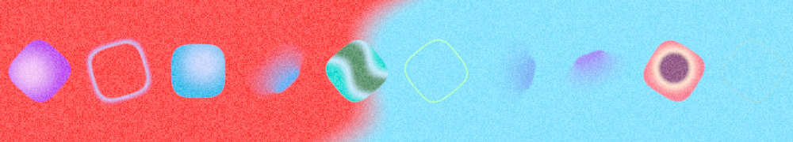
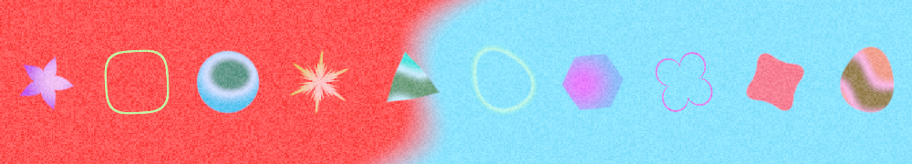
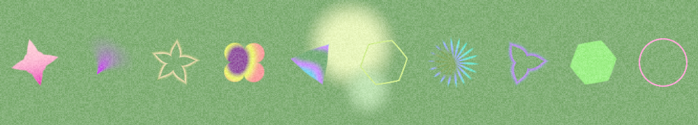
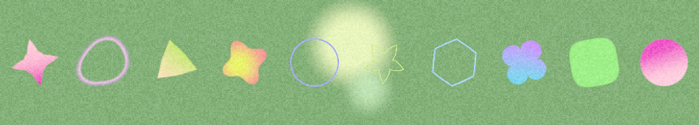
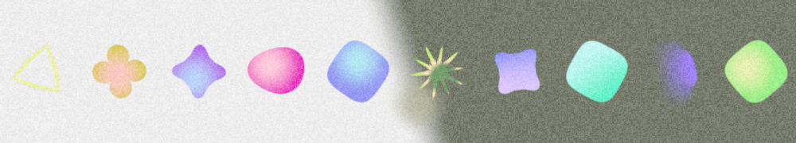
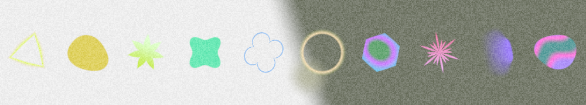
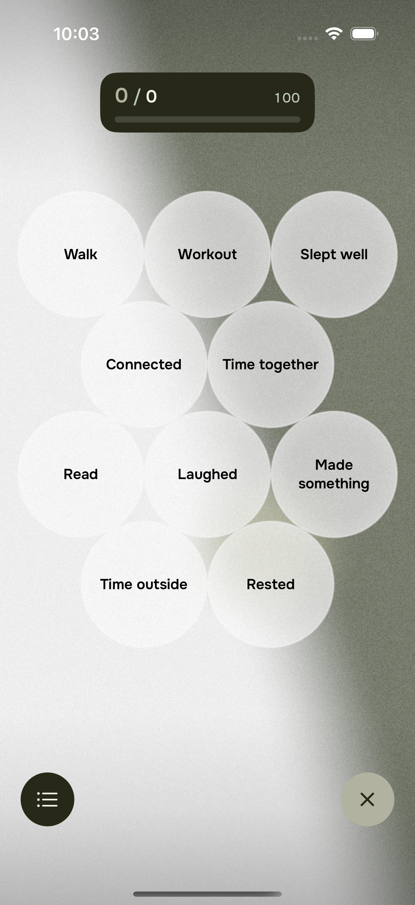
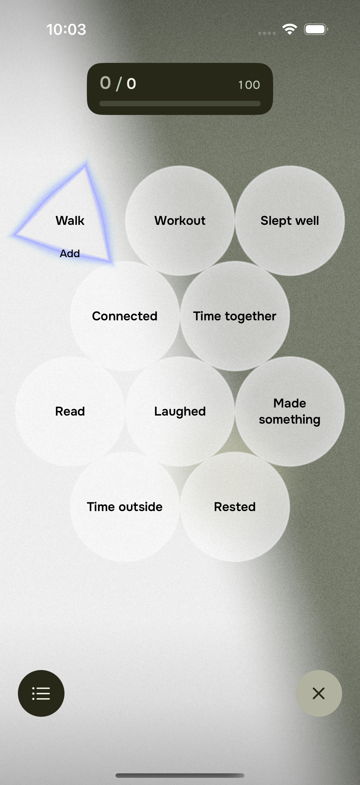
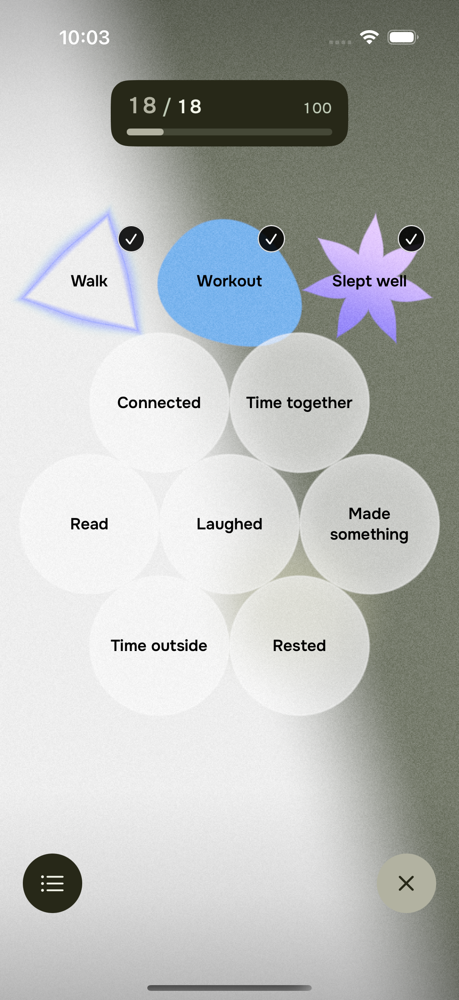
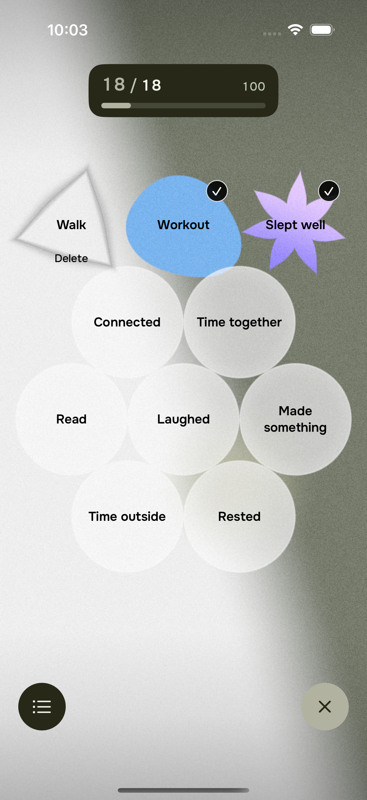

Nowhere: фигуры и состояния меню
Одинаковые действия, три последовательных дня. Реальный Metal-рендер в симуляторе; сохранённые холсты пользователя не использовались.
10 сентября
До
После — новые добавления
11 сентября
До
После — новые добавления
12 сентября
До
После — новые добавления
Состояния меню
Не добавлено
Первое нажатие
Добавлено
Подтверждение удаления
Старые фигуры сохраняют свои параметры. Новое разнообразие применяется только к новым добавлениям.